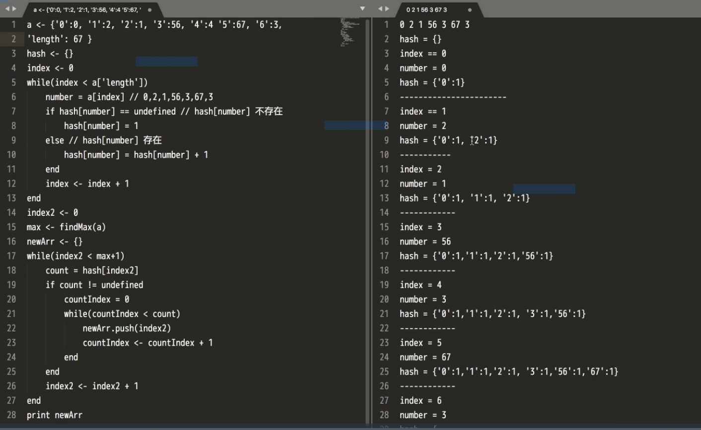

- 1、计数（计算个数）排序特点：
- 优点：复杂度O：（n+Max）,比块排还快；
-
缺点：
- 靠hash 来遍历；
- 无法对小数和复数进行排序；
- 计数排序是最简单的，不需要做二次排序，但是浪费了很多桶，桶的个数等于数组中最大数+1；
- 应用举例：对一个班级学生年龄分布做排序；
以上为遍历hash代码：
计数排序完整伪代码：
- 计数排序中的桶（复杂度 O(n+max)，比快排还快,计数排序就是把每个一样值的键放入一个桶中并统计个数（有无数个桶，每个桶放一个数）,这时已经排好序了，再出桶打印出来；在数组中，a['length']表示长度，在大都数语言里数组的长度等于最大值对应的键的下标+1，因为下标从零开始；
- 2、桶排序：将数组分到有限数量的桶子里（一个桶里面放一段值对应的键，就是每个桶放一段数），然后对每个桶子再分别排序（有可能再使用别的排序算法或是以递归方式继续使用桶排序进行排序），最后将各个桶中的数据有序的合并起来。
- 应用举例：对高考分数做排序；
- 3、基数排序：一种非比较型整数排序算法，其原理是将整数按位数切割成不同的数字，然后按每个位数分别比较。
- 先对小位数进行入桶排序，再出桶，再进行对大一位数进行入桶排序，再出桶，这样一直到数组中最大位数，就排完序了；（最多数桶的个数不超过9；且每次先出桶的都是先进来的）。
- 应用举例：可以对很大数字的数组进行排序；
- js里面用对象表示
桶排序就是把排序分到极致，每一个桶里面永远不做对比，跟快排差不多，但是把一个桶里面的数字在进行比较；
- 先进先出
- 一般用数组实现。
- 应用举例：12306的排队系统
- 入队列是push();出队列是shift()
- Hash如果是先进先出则这个是队列。
- 先进后出
- 一般用数组实现
- 举例：盗梦空间
- 入栈是push();出栈是pop();
- Hash如果是先进后出则这个是栈。
- 数组无法直接插入或删除其中的一项或几项，链表是动态的、链表可以做到；
- 链表的好处就是可以把引用指向任何Hash;但是数量很多时指向很麻烦。数组就是能快速指向任何一个值，但就是删除某一个或几个很麻烦；
- 用哈希表示链表
- Head : 链表的头一个项，链表的表头；
- Node: 链表的节点（表头也是节点）；
- 举例：只要有层级结构就用到tree;DOM
- 概念：层数（上面层是小的、下面层是大的）、节点个数（每一个Hash就是一个节点：没有子节点的节点称为叶子节点，有的话叫做非叶子节点）、深度（指总共有多少层）
- 二叉树：每一个节点每次最多可以分两个叉的树结构。二叉树的每i层至多拥有2(i-1)个节点数,前提是从1开始；所有层的节点个数总和为：2i-1;
- 满二叉树：每一个节点每次分不多不少两个叉的数，而且每一个层里面都要长满。一棵二叉树的深度为K，且有2k-1个节点，就叫做满二叉树，前提是从1开始。特点是：每一层上节点数都是最大节点数。(也可以说二叉树的最后一层都是满的就叫做满二叉树)
- 完全二叉树：一棵二叉树中出最后一层外，若其余层都是满的，并且最后一层或者是满的，或者是右边缺少连续若干节点的树结构；
- 完全二叉树和满二叉树一般用数组（实现）来存树；完全二叉树和满二叉树可以通过对下标的数字来获取数组中的数字（靠的是节点公式）；
- 其他树一般用哈希（对象）（实现）存树；
- 操作：增删改查
- 堆排序：可视为一颗完全的二叉树，只满足一个条件:上层中的节点上数字永远比下面的当儿子节点上的数字大；所以堆也可以用数组来表示，而其他的普通的二叉树都用链表来表示；/li>
- 堆排序用到了 tree
-
-
最大堆：
最大元素值出现在堆顶（根节点）
堆中每个父节点的元素值都大于等于其孩子节点；
- 最小堆：
最小元素值出现在堆顶（根节点）
堆中每个父节点的元素值都小于等于其孩子节点；
- 最大堆调整：作用是使堆中每个父节点的元素值都大于等于其孩子节点，也就是使堆满足最大堆条件的的操作。
- 最大堆排序步骤：第一步：最大堆调整：得到最大数并把它隐藏掉，再进行最大堆调整：把最右边的节点值提升来，再得到最大值，这样一步一步做，每一次比上次少一个节点。其完整的时间复杂度使：N*Log(N).
-
最大堆：